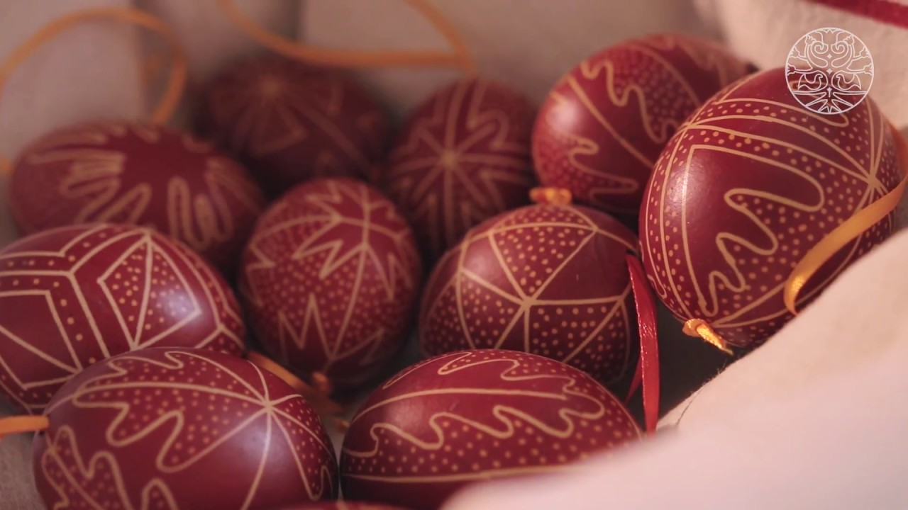

Tojásfestés kezdőknek és lustáknak :)
A megfőtt tojásokat nem muszáj befesteni, alkoholos filctoll segítségével egyszerűen is díszítheted őket. Festhetsz rájuk arcokat, ötletes megoldás és igazán nem igényel sok időt, vagy kézügyességet. Egy nevet ráírva személyre szóló tojásokat készíthetsz. A figyelmességet biztosan értékelni fogják a locsolók. A dekorációt egyszerűen megoldhatod az aluljárókban is fillérekért kapható húsvéti csibékkel. Kedves hangulatot teremtenek a lakásban, a kicsik pedig imádják. Helyezd el őket a lakás különböző pontjain, ahol a gyerekeknek meg kell keresni őket - tetszeni fog nekik a feladat! Nyuszis, csibés szalvéták beszerzésével egyszerűen húsvéti hangulatot varázsolhatsz az ünnepi asztalhoz is. Néhány ágból és színes tollakból különleges díszek készülhetnek, de ha a hagyományos húsvéti díszítést részesíted előnyben, akkor a kifújt, kidíszített tojásokat függeszd fel az ágakra.

Egy kis ötletelés: